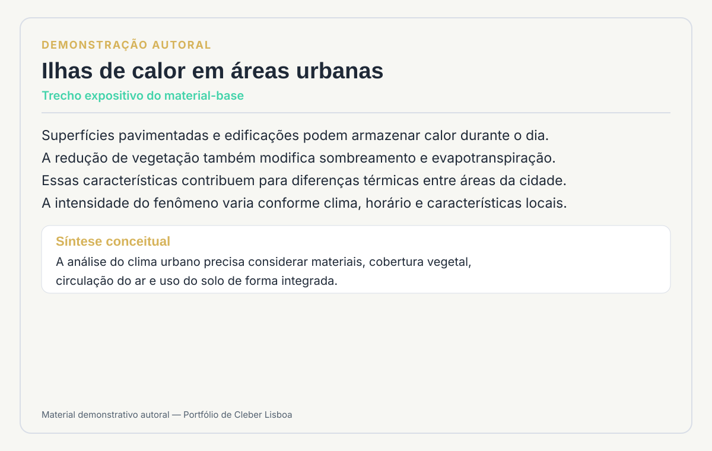
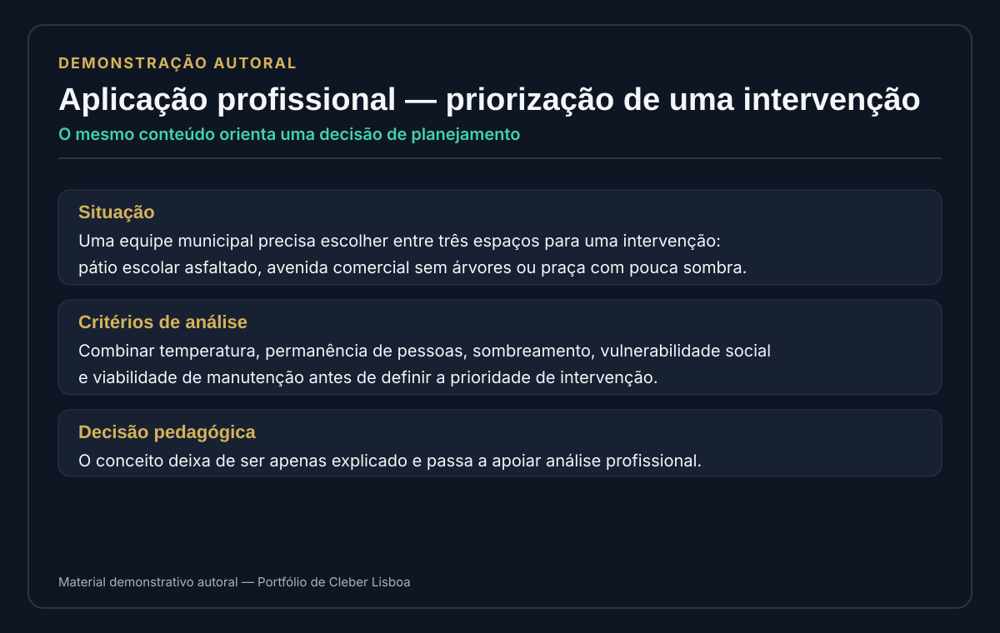
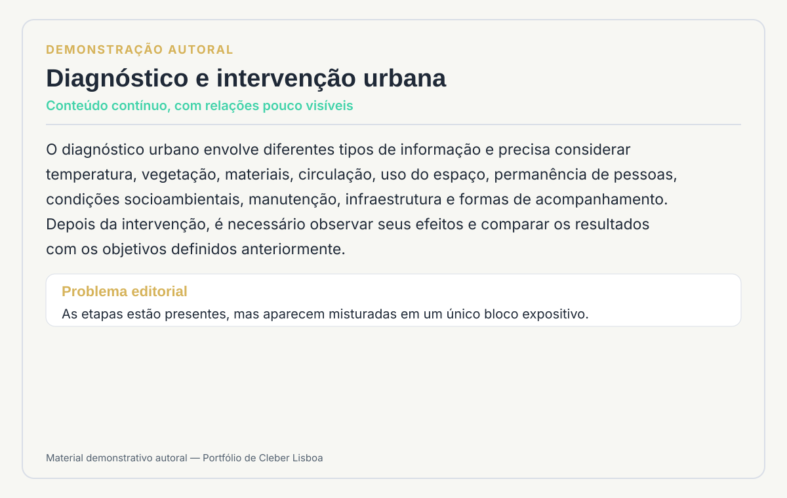
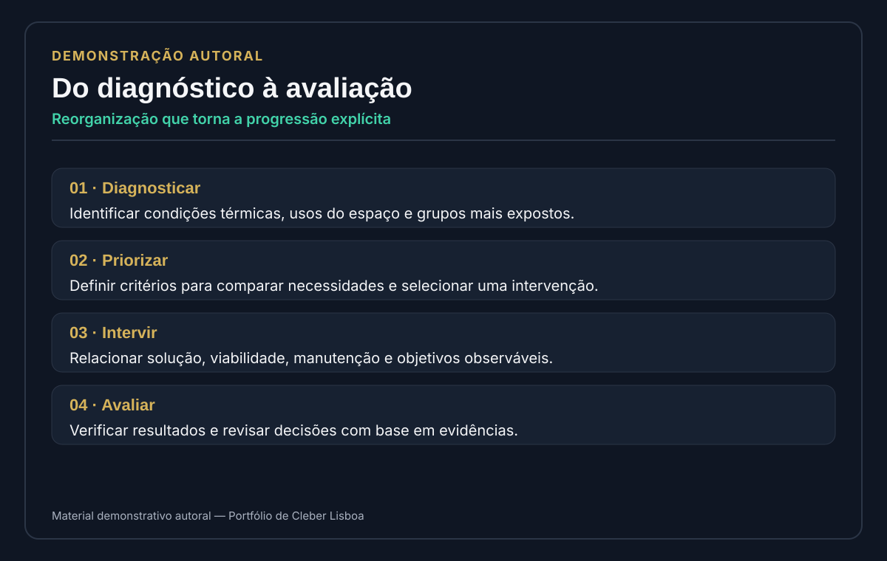
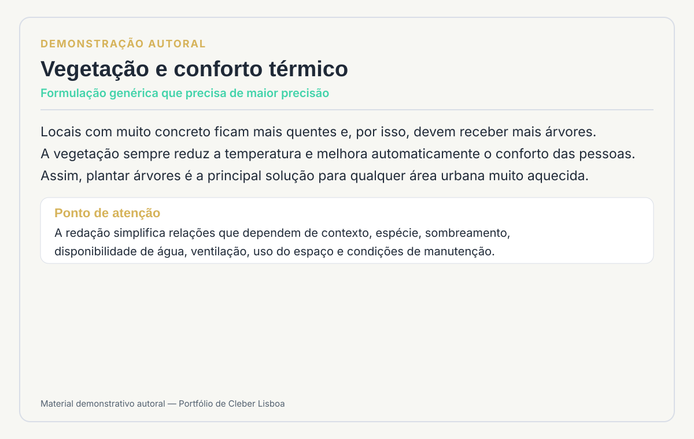
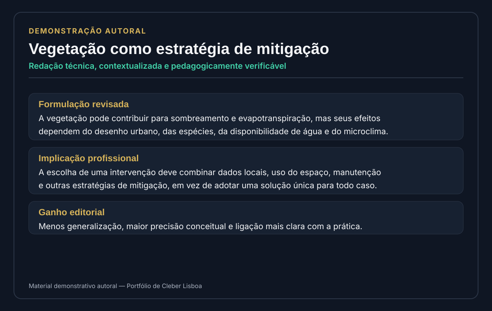

Atualizar materiais existentes quando a necessidade ultrapassa uma simples revisão de texto.
O ponto de partida foram livros técnicos já produzidos. A análise mostrou que o trabalho exigia mais do que correções pontuais: havia necessidade de atualização, contextualização profissional, pesquisa, curadoria e adequação pedagógica de diferentes partes dos materiais.
Diagnosticar, pesquisar e reconstruir conexões entre conteúdo e prática profissional.
Minha atuação esteve concentrada no Design Educacional, com trabalho de pesquisa e curadoria sobre o conteúdo, identificação de lacunas, atualização, ampliação, contextualização profissional e conferência da coerência pedagógica após as intervenções.
Diagnóstico pedagógico
Leitura crítica dos materiais para identificar pontos que precisavam ser preservados, atualizados, ampliados ou recontextualizados.
Pesquisa assistida por IA
Uso de ferramentas, especialmente Perplexity, para apoiar levantamentos e explorar informações que depois passavam por análise e seleção.
Contextualização profissional
Aproximação dos conceitos de situações e decisões que fazem sentido para a formação técnica e para o futuro ambiente de trabalho.
Curadoria e Validação Pedagógica
Seleção do que deveria permanecer no material e conferência da consistência da unidade após as mudanças.
Um fluxo de transformação, não uma substituição automática do original.
A revisão textual e gramatical final ocorreu posteriormente, com outros profissionais da equipe. O projeto mantém essa divisão de responsabilidades explícita.
Cada material revelou um tipo diferente de intervenção.
Anatomia Sistêmica
Contextualização profissional e aproximação dos sistemas do corpo humano de situações vivenciadas por diferentes perfis técnicos da área da saúde.
Contexto profissionalHigiene Ocupacional
Atualização e reorganização de tópicos ligados à gestão de riscos, incorporando os referenciais utilizados no projeto e novos contextos do mundo do trabalho.
Atualização conceitualSaúde e Segurança do Trabalho
Aproximação do conteúdo de decisões, análises e responsabilidades que o profissional precisa desempenhar em situações de trabalho.
Competências profissionaisUrgência e Emergência
Revisão de terminologia, orientações e procedimentos técnicos à luz das referências adotadas durante a atualização do material.
Atualização técnicaO trabalho do Design Educacional torna-se visível quando comparamos o material-base com a versão reestruturada.
Para demonstrar esse tipo de intervenção sem reproduzir conteúdos institucionais, os comparadores abaixo utilizam um material autoral criado exclusivamente para o portfólio.
Do conceito expositivo para uma decisão situada na prática.
O conteúdo conceitual é preservado, mas passa a orientar uma situação de planejamento, com critérios de análise, tomada de decisão e relação explícita com a atuação profissional.


De um bloco contínuo para uma progressão de análise mais clara.
Informações já presentes no material são reorganizadas para tornar visíveis as relações entre diagnóstico, priorização, intervenção e avaliação, reduzindo a carga expositiva sem simplificar o conteúdo.


De uma formulação genérica para uma redação mais precisa e contextualizada.
A intervenção reduz generalizações, explicita condicionantes e aproxima a redação de um padrão técnico mais verificável, sem transformar atualização em substituição automática do conteúdo.


A ferramenta acelera a pesquisa; a curadoria decide o que merece entrar no material.
IA como apoio
Exploração de fontes, levantamento de possibilidades, comparação de informações e apoio à atualização de tópicos.
Julgamento do D.E.
Análise de pertinência, coerência com o público, seleção, contextualização, decisão editorial e validação pedagógica.
O processo teve etapas e responsabilidades distintas.
Os materiais passaram por diferentes profissionais ao longo da produção. No portfólio, a autoria e os créditos permanecem separados para mostrar com clareza a minha contribuição e a contribuição da equipe.
Diagnóstico, pesquisa, contextualização, atualização e trabalho curatorial sobre o conteúdo.
Os documentos registram profissionais responsáveis por etapas formais de curadoria em diferentes unidades.
A revisão textual e gramatical final foi realizada por colegas, após a etapa de intervenção educacional.
Quatro disciplinas transformadas a partir de materiais existentes — sem apagar a origem do conteúdo.
“Atualizar um material educacional não é apenas substituir informações antigas: é reconstruir as conexões entre conteúdo, contexto e prática profissional.”
Este projeto evidencia uma competência complementar ao Gerador de Transposição. Em P01, preservar o conteúdo é uma exigência central; aqui, intervir com critério é parte do próprio trabalho.